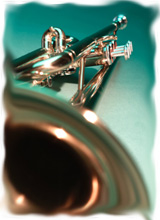

|
Useful links
Making Music - www.makingmusic.org.uk Making Music represents and supports amateur and semi-professional music groups of all genres throughout the United Kingdom. They provide a comprehensive range of artistic and administrative services and development and training opportunities. Making Music also lobbies on behalf of members to national and local government and other agencies. Music in Romsey - www.musicinromsey.ticketsource.co.uk Music in Romsey provides visiting musicians with advance booking information, ticket advice and sales, concert staging, seating plans, stage managing and front of house facilities. |
 |